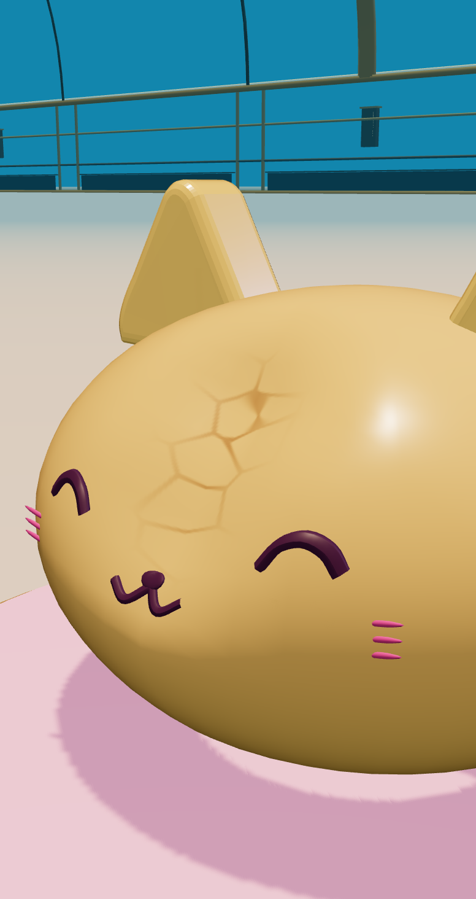
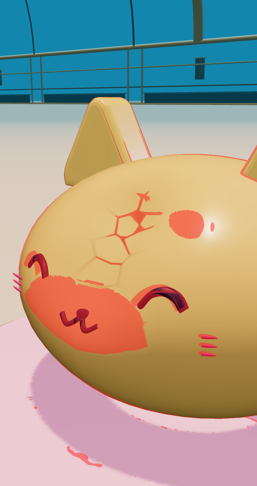

material-butter-cracked
Reference
Original reference A/B is visible in the user conversation. Original image bytes are not mounted here. This slot is explicitly incomplete; no generated replacement is used.
Actual game

Same-camera state difference

Camera, timestep, material measurements and hash
{
"image": "material-butter-cracked.png",
"sha256": "ab2660375c3c7758e05019c32fb51e6c9a65fb48cb1b541b9da176befb57f2e0",
"size": [
776,
1464
],
"meanRGB": [
165.55433408681202,
162.5682426342178,
142.66312725339418
],
"metadata": {
"material": "butter",
"solver": {
"sleeping": false,
"particles": 343,
"constraints": 3150,
"contacts": 1,
"steps": 87,
"time": 1.4499999999999997,
"volumeRatio": 0.9963978519216263,
"minTetRatio": 0.741686481625522,
"maxDeformation": 0.4368481891011748,
"maxStrain": 0.1360500185802083,
"damage": 0.39247244596481323,
"faults": 0,
"limitedSteps": 0,
"lastPhysicsMs": 1.0999999940395355,
"droppedTime": 0
},
"butter": {
"crackedVertices": 21,
"maxSurfaceDamage": 0.39007386565208435,
"detached": 0,
"activeFragments": 0
},
"camera": {
"position": [
3052,
-445.948,
1242
],
"target": [
3048,
-447.548,
1237.3
],
"fov": 48,
"aspect": 0.5300546448087432,
"near": 0.08,
"far": 20000
},
"renderer": {
"dpr": 2,
"shadow": 1,
"toneMapping": 4
},
"time": 1.4499999999999997
},
"group": "material-butter",
"sameCameraAndRenderSettings": true,
"edgeMeanAbsoluteDifference": 1.746397210016337,
"meanAbsolutePixelDifference": 4.272786861773046,
"changedPixelFraction": 0.08122693791899048,
"differenceImage": "material-butter-cracked-difference.png"
}